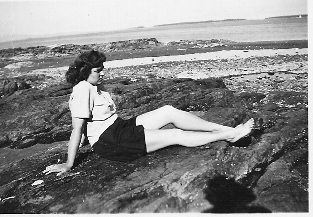
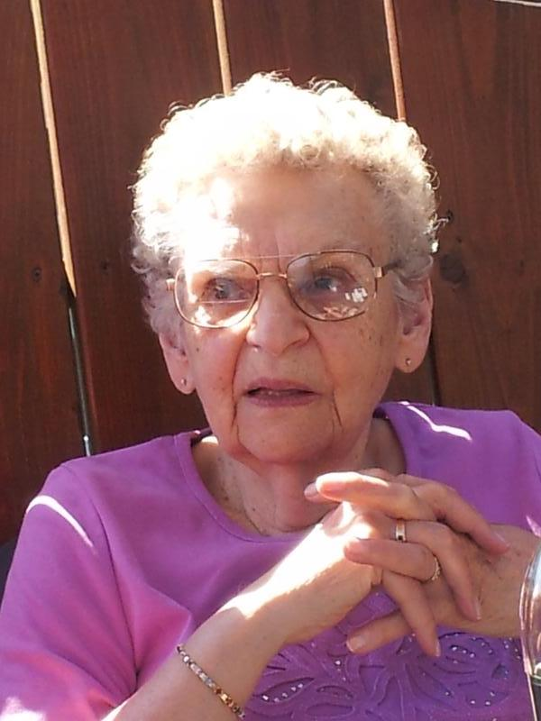

Goodbye, Mum
In the end you think about the beginning. I remember sweaters so thick you could use them as blankets, each one made by hand. I remember getting blackberry pie for my birthday instead of cake because she knew that was my favorite, and how she would make a separate batch of hamburger patties for me because I didn’t like them with onions. I remember her driving an hour and a half each way to night school to get her teaching degree while raising four kids, and how much she enjoyed reading biographies, and knowing that she loved me even when I thought no one else did. I remember how much she enjoyed fresh cut flowers, and going back to San Francisco for the first time in 65 years, and how proud she was of her children and grandchildren.
The happiest moment of her life was when the doctor told her that her youngest son was going to survive his cancer; the saddest came years later when she learned that she was going to outlive her daughter. She taught hundreds of children to read, to clean up after themselves, and to hug their friends when they were sad, and I think she believed that the world would be a better place if everyone would do those three simple things.
Goodbye, Mum. I know you were ready to leave, but I wasn’t ready to say goodbye. I’m going to miss you so much.


Doris Wilson
July 22, 1927 - January 7, 2020